Everyone Assumes Convenience Wins. Four Experiments Found That Building an IKEA Box Makes You Value It 63% More — As Much as an Expert's Creation
In four lab experiments at Harvard, Duke, and Tulane, researchers found people who successfully assembled their own storage boxes, origami, and Lego sets bid significantly more for their creations than others would pay for identical prebuilt items.
Everyone Treats Boredom as a Productivity Problem. Two Experiments Found That 15 Minutes of Copying Phone Numbers Increased Creative Output by 45%.
In two experiments at the University of Central Lancashire, psychologists induced boredom by having adults copy or read telephone numbers for 15 minutes and found the bored groups generated significantly more uses for a pair of polystyrene cups and solved more convergent word problems than controls.
Everyone Assumes Typing Is Just Faster Handwriting. A 256-Sensor EEG Study Found Handwriting Creates Brain Connectivity That Typing Does Not.
Norwegian neuroscientists recorded 256-channel EEG while 36 students wrote or typed the same words and found handwriting triggered widespread theta and alpha coherence between parietal and central hubs, a pattern linked to memory encoding that did not appear during typing.
A Poster of Watching Eyes Tripled Honesty-Box Payments. Two Meta-Analyses Later Found the Effect Shrinks Toward Zero.
In a ten-week field experiment at Newcastle University, an honesty box for coffee collected £0.42 per litre of milk when a poster of watching eyes was displayed versus £0.15 with flowers, a 2.76-fold increase that later meta-analyses found shrinks toward zero.
Everyone Stops Reading Aloud After Elementary School. Eight Experiments Found That Words Spoken to Yourself Are a Third More Memorable Than Words Read in Silence.
In eight experiments at the University of Waterloo, cognitive psychologist Colin MacLeod demonstrated that reading words aloud during study produces a consistent 15-to-20-percentage-point advantage in later recognition over silent reading.
Everyone Assumes Spending Money on Yourself Feels Best. A Survey of 234,917 People Across 136 Countries Found Spending on Others Is a Stronger Predictor of Happiness, Even in the Poorest Nations.
In a series of studies including a nationally representative survey, a randomized experiment, and cross-cultural data from the Gallup World Poll, researchers found that prosocial spending predicts happiness more reliably than personal spending.
Millions Microdose LSD for Creativity, Focus, and Well-Being. The Largest Placebo-Controlled Trial Found That Sugar Pills Produced the Same Improvements.
In a self-blinding citizen science study of 191 microdosers, participants who took actual psychedelics and those unknowingly taking placebos reported identical improvements in well-being, life satisfaction, and cognition.
Being a Night Owl Isn't Just a Preference. A Study of 433,268 Adults Found Evening Types Had a 10% Higher Risk of Dying Over Six and a Half Years — Even After Adjusting for Sleep Duration.
Researchers tracked nearly half a million UK Biobank participants for six and a half years and found that self-identified "definite evening types" had significantly higher rates of diabetes, psychological disorders, and all-cause mortality compared to morning types.
90% of Americans Use Caffeine Daily to Think Better. A Head-to-Head Trial Found a 60-Minute Nap Improved Memory While Caffeine Made It Worse.
In the first direct comparison of caffeine and daytime naps on memory, researchers found naps enhanced verbal recall and perceptual learning while a standard dose of caffeine impaired motor memory and offered no benefit for word recall.
Schools Replaced Books With Tablets. A Meta-Analysis of 54 Studies and 171,055 Readers Found Students Comprehend Less on Screens Than Paper — and the Deficit Grows Worse Every Year.
Researchers pooled 54 studies spanning 17 years and found that reading on screens consistently produces worse comprehension than reading on paper, with the deficit especially pronounced for informational texts and time-constrained reading. The gap has widened as screens improved.
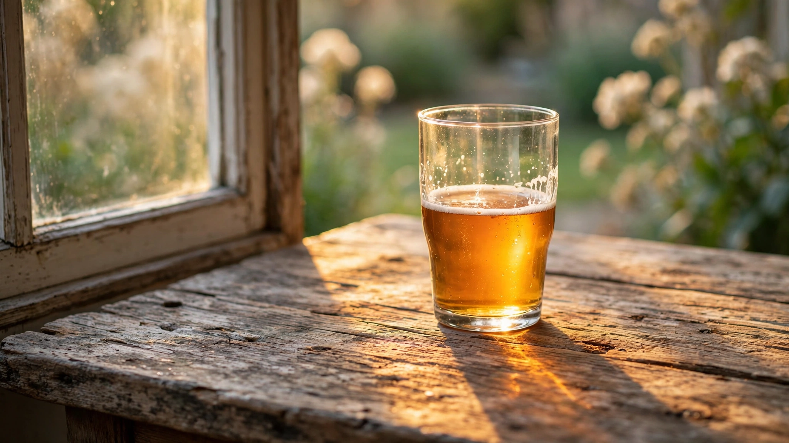
Everyone Assumes Alcohol Only Impairs Thinking. A Study Found People Below the Legal Limit Solved 58% of Creative Puzzles Versus 42% for the Sober Group — and Solved Them Faster.
Researchers brought 20 social drinkers to a blood alcohol concentration of 0.075 and tested them on creative word-association problems against 20 sober controls. The intoxicated group solved more problems, solved them faster, and reported more sudden "aha" moments of insight.
Identical Twins Share Every Gene. A Study of 80 Twin Pairs Found That by Age 50, the Chemical Tags Controlling Their DNA Had Diverged So Much They Were No Longer Epigenetically Identical.
A Spanish research team measured DNA methylation and histone acetylation in identical twin pairs aged 3 to 74. Young twins were epigenetically indistinguishable. Older twins showed roughly four times the variation in gene-controlling chemical modifications, with the largest gaps appearing in pairs who had spent more time apart or led different lifestyles.
Everyone Assumes Plants Are Silent. A Tel Aviv University Team Recorded Stressed Tomato Plants Emitting 35 Ultrasonic Clicks Per Hour at the Volume of Normal Conversation.
Researchers placed ultrasonic microphones next to drought-stressed and injured tomato and tobacco plants. The plants produced 30 to 50 clicks per hour in the 20 to 100 kilohertz range, loud enough for insects to detect from five meters away.
Everyone Assumes Cities Are Hostile to Trees. A Study of 1,383 Trees Across Ten Metropolises Found They Grow Up to 25% Faster in Concrete Than in Forest Soil.
An international team counted tree rings from Berlin to Brisbane and found that urban trees systematically outgrow their rural counterparts. A follow-up revealed the trade-off: city trees also die twice as fast.
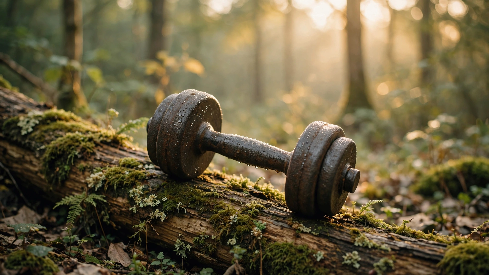
Every Gym in the World Says Lift Heavy to Build Muscle. A Meta-Analysis of 21 Studies Found That Loads as Light as 30% of Your Max Produce the Same Hypertrophy.
A systematic review and meta-analysis of 21 randomized trials found no significant difference in muscle growth between training with heavy loads and training with weights as light as 30% of maximum strength, so long as every set was taken to muscular failure.
Nobody Tests Your Sense of Smell at a Physical. A Study of 3,005 Older Adults Found That Failing a Simple Scratch-and-Sniff Test Tripled the Odds of Dying Within Five Years.
Researchers at the University of Chicago handed older Americans a five-item scratch-and-sniff test and followed them for five years. Those who couldn't identify common odors had more than three times the odds of death, a risk independent of and stronger than diagnoses of heart failure, cancer, or lung disease.
Every Parent Tells Their Child “You’re So Smart.” Six Experiments Found That Praise for Intelligence Makes Children Avoid Challenges, Quit Faster, and Lie About Their Scores.
Six randomized experiments gave fifth graders identical positive feedback after a successful test, adding just one sentence: “You must be smart” or “You must have worked hard.” That single sentence split children into two groups with opposite responses to failure. One group chose harder problems and improved. The other chose easy ones, gave up, and misrepresented their scores.
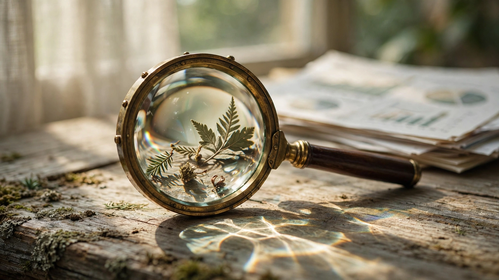
Hundreds of Studies Confirmed That the Least Competent People Are the Most Overconfident. A Psychological Review Paper Found They All Fell for the Same Statistical Illusion.
The Dunning-Kruger effect became the internet's favorite scientific takedown. Multiple independent analyses now show the famous pattern is manufactured by the statistics, not by human cognition, and the real relationship between skill and overconfidence runs in the opposite direction.
Everyone Knows Normal Body Temperature Is 98.6°F. A Stanford Analysis of 677,423 Measurements Found It Has Dropped by More Than a Full Degree Since the Civil War.
The number drilled into every medical student, printed on every thermometer box, and cited by every worried parent has been sliding downward for at least 157 years. Three cohorts spanning the Civil War to the smartphone era show the decline is real, monotonic, and global.
Everyone Dreads Getting Older. A Gallup Survey of 340,847 Americans Found That Emotional Well-Being Improves After 50, With Stress and Anger Declining Steadily From the Early 20s.
Ageism runs deep enough that most people assume growing older means growing unhappier. A massive Gallup survey, a decade-long experience-sampling study, and cross-national evidence from 145 countries reveal the opposite pattern: emotional well-being bottoms out in midlife and climbs through old age.
Everyone Believes Speaking Two Languages Sharpens the Mind. A Meta-Analysis of 891 Effect Sizes From 152 Studies Found the Advantage Disappears After Correcting for Publication Bias.
The "bilingual advantage" has been one of cognitive psychology's most influential claims for two decades. It shaped school curricula, parenting advice, and government policy. Multiple large-scale studies and a comprehensive meta-analysis now show it was sustained more by selective publishing than by evidence.
Every Test-Prep Book Says Go with Your First Instinct. A Review of 33 Studies Found That Changed Answers Go From Wrong to Right Twice as Often as Right to Wrong.
Three out of four students believe changing answers on a multiple-choice test will hurt their score. The evidence, spanning seven decades and tens of thousands of exam responses, says the opposite. The belief survives not because it's correct, but because of a memory illusion that makes the exceptions more vivid than the rule.
Everyone Celebrates Daydreaming. A Harvard Study Tracking 2,250 Adults in Real Time Found That a Wandering Mind Is an Unhappy Mind — No Matter Where It Wanders.
Using an iPhone app that pinged volunteers at random moments, researchers collected 250,000 data points. Mind-wandering predicted unhappiness more reliably than what people were doing, and the daydreaming came first, not the bad mood.
Malcolm Gladwell Said 10,000 Hours of Practice Produces Expertise. A Meta-Analysis of 88 Studies Found Practice Explains Just 12% of the Gap Between Top Performers and Everyone Else.
Researchers pooled data from 88 studies spanning music, sports, games, education, and professions. Deliberate practice accounted for 26% of the variance in games, 21% in music, 18% in sports, 4% in education, and less than 1% in professional work.
Everyone Knows Dogs Smell Better Than Humans. A Rutgers Neuroscientist Reviewed 150 Years of Evidence and Found the Whole Idea Traces Back to a Single Untested Hypothesis From 1879.
A Science review dismantled the textbook claim that humans are poor smellers. The human olfactory bulb contains a similar neuron count to other mammals, humans outperform dogs on certain odors, and untrained volunteers can track scent trails across a field — an ability attributed exclusively to animals for centuries.
Everyone Sits Down to Think Harder. Four Stanford Experiments Found Walking Increases Creative Output by 60 Percent, Even on a Treadmill Facing a Blank Wall.
In four experiments with 176 participants, walking at a comfortable pace boosted creative divergent thinking by 60% on average. The effect held on a treadmill in a featureless room, persisted briefly after sitting back down, and was confirmed by a 2026 meta-analysis of 23 studies with a pooled effect size of d = 0.93.
Putting Your Phone on Silent Should Be Enough. Two Experiments with 800 People Found That a Smartphone's Mere Presence Reduces Working Memory and Fluid Intelligence — Even When It's Off.
Researchers at the University of Texas placed smartphones on desks, in pockets, or in another room during cognitive tests and found that proximity alone reduced working memory and fluid intelligence — even when phones were off and participants reported no distraction.
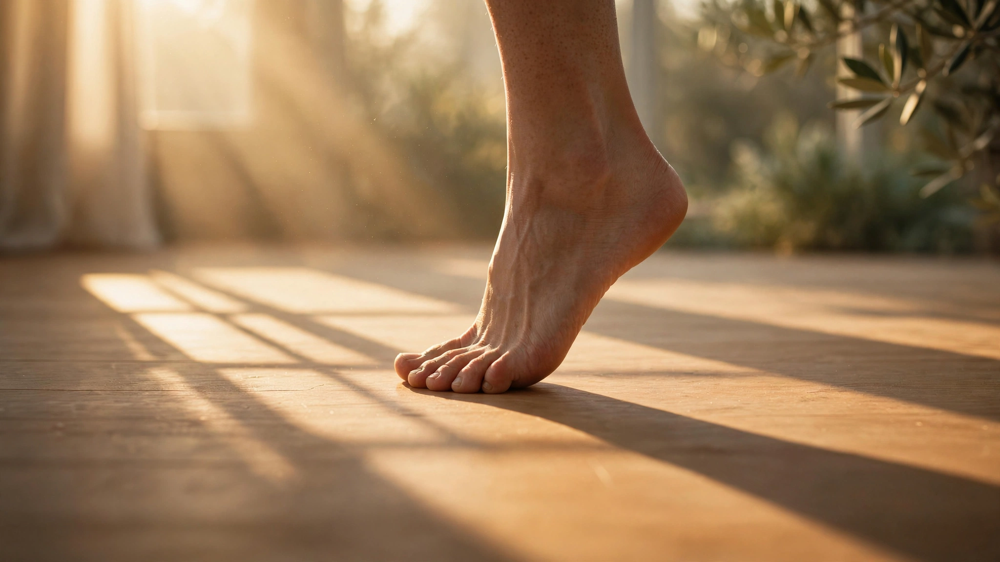
Nobody Checks Your Balance at a Routine Physical. A Prospective Study of 1,702 Adults Found That Failing a Simple Ten-Second One-Leg Stand Nearly Doubled the Risk of Dying.
A 12-year prospective cohort study in Brazil found that middle-aged and older adults who couldn't balance on one leg for 10 seconds had an 84% higher risk of all-cause mortality, independent of age, sex, BMI, and existing conditions.
Everyone Prescribes Cardio for Anxiety. A Meta-Analysis of 16 Randomized Trials Found Lifting Weights Reduces Anxiety Symptoms With an Effect Size Comparable to Medication.
Researchers pooled 922 participants across randomized controlled trials and found that resistance exercise training significantly reduces anxiety, regardless of age, sex, or workout intensity, with effects in the range typically observed for SSRIs and psychotherapy.
Every Kitchen Sign Says Wash Your Hands with Hot Water. A Six-Month Rutgers Study Found Cold Water at 60°F Removes the Same Amount of Bacteria as Water at 100°F.
Researchers contaminated volunteers' hands with E. coli and tracked bacterial reduction across three water temperatures over 20 sessions. Cold water performed identically to hot, challenging an FDA guideline that has been wasting energy for decades.
The NHS, Calm, and Your Therapist All Prescribe Meditation for Stress. A Systematic Review of 6,703 Participants Found One in Twelve Developed Anxiety, Depression, or Cognitive Problems Instead.
Researchers at Coventry University analyzed 83 studies spanning 45 years and found that 8.3% of people who meditate experience adverse effects. The most common were anxiety, depression, and cognitive anomalies. Some had no prior mental health history.
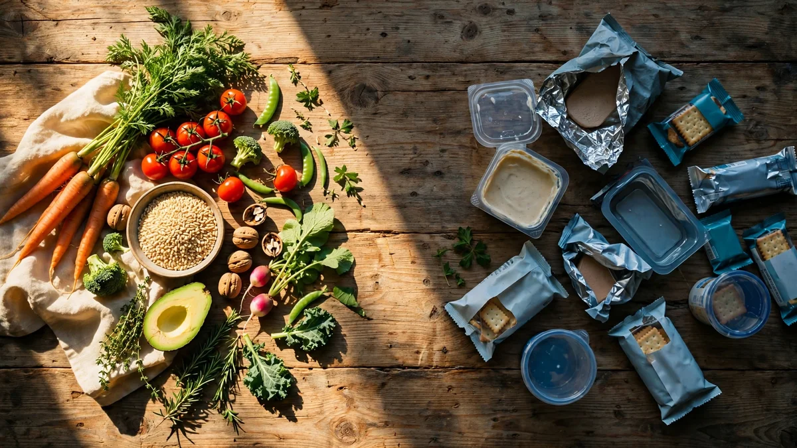
Every Nutritionist Says a Calorie Is a Calorie. An NIH Metabolic Ward Study Matched Two Diets for Calories, Sugar, Fat, and Fiber, Then Found People Ate 500 Extra Calories a Day on the Ultra-Processed One.
Twenty adults lived in an NIH metabolic ward for four weeks, eating two diets in random order. Both matched for calories, energy density, macronutrients, sugar, sodium, and fiber. On the ultra-processed diet, participants spontaneously consumed 508 more calories per day and gained nearly a kilogram in two weeks.
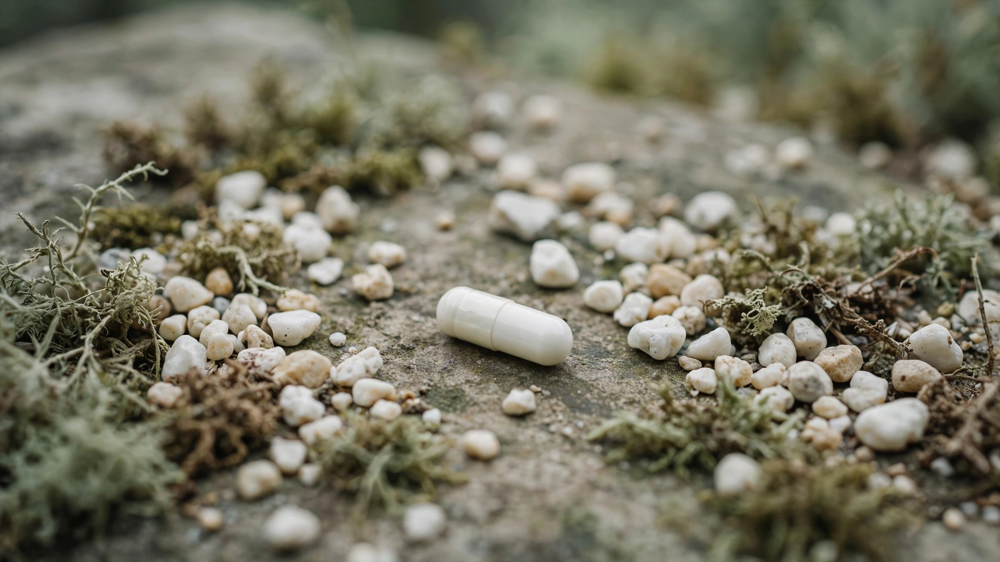
Vitamin D Is the World's Most Popular Bone Supplement. The Largest Trial Ever Conducted Found It Does Not Prevent Fractures.
A randomized trial of 25,871 adults tested whether 2,000 IU of daily vitamin D3 reduced fracture risk over five years. The hazard ratios were 0.98, 1.01, and 0.97. None reached significance.
Americans Spent $70 Billion on Organic Food Last Year for Health. A Stanford Review of 240 Studies Found the Nutritional Difference Is Negligible.
A Stanford systematic review of 240 studies found no strong evidence that organic foods are more nutritious than conventional alternatives. The premium buys lower pesticide residues, not better nutrition.
Everyone Seeks Quiet to Think Clearly. Five Experiments Found That Coffee-Shop-Level Background Noise Makes You More Creative Than Silence.
Five experiments found that 70 dB ambient noise — the level of a busy café — enhanced creative thinking. Too quiet made ideas conventional. Too loud crushed them.

Everyone Believes the Oldest Child Is Responsible and the Youngest Is a Rebel. The Largest Study of Birth Order and Personality, 377,000 People, Found the Correlation Is 0.02.
Two independent research groups examined nearly 400,000 people across four countries using both between-family and within-family designs. Birth order showed no meaningful relationship with any Big Five personality trait.
Every Dermatologist Says to Stay Out of the Sun. A 20-Year Study of 29,518 Swedish Women Found That Avoiding Sun Exposure Carried the Same Mortality Risk as Smoking.
A prospective cohort study tracked 29,518 Swedish women for two decades and found that sun avoiders had roughly double the cardiovascular mortality of sun-seekers. Nonsmoking sun avoiders died at the same rate as smokers who spent the most time in the sun.
Everyone Tells You to Cheer Up. Dozens of Experiments Found That a Bad Mood Makes Your Memory Sharper, Your Judgment More Accurate, and Your Arguments More Persuasive.
A field study of 73 shoppers found those in a weather-induced bad mood recalled three times as many details as their happy counterparts. A systematic review of dozens of experiments reveals that mild sadness reduces gullibility, eliminates stereotyping bias, and produces higher-quality persuasive arguments.
Everyone Assumes an Expensive Wedding Reflects a Stronger Commitment. A Study of 3,151 Marriages Found Couples Who Spent Over $20,000 Were 3.5 Times More Likely to Divorce.
Emory University economists Francis-Tan and Mialon found that marriage duration is inversely associated with wedding spending but positively associated with the number of guests, suggesting that community support, not financial spectacle, predicts marital stability.
Every Parent Believes Homework Helps Their Child Learn. A Duke University Research Synthesis Found That for Elementary Students, the Correlation With Achievement Is Effectively Zero.
Harris Cooper and colleagues synthesized two decades of American homework research and found that for students in grades K through 6, the correlation between time spent on homework and academic achievement hovered around zero, a conclusion independently confirmed by John Hattie's analysis of over 100,000 students.
Three-Quarters of Americans Had Triclosan in Their Urine. A Systematic Review of 27 Studies Found the Antibacterial Soap That Put It There Killed No More Germs Than Plain Soap.
A University of Michigan team reviewed every published study comparing antibacterial and plain soap in real-world settings and found zero additional health benefit — a finding so consistent that the FDA eventually banned 19 antibacterial ingredients from consumer soaps entirely.
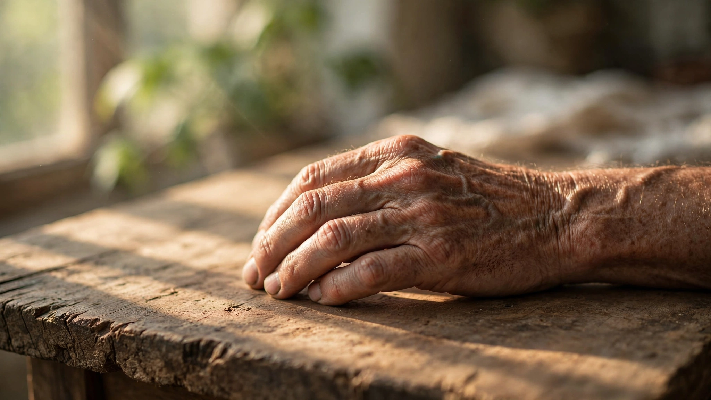
Every Doctor Checks Your Blood Pressure. A Study of 139,691 People Across 17 Countries Found Grip Strength Predicts Cardiovascular Death More Accurately.
In the largest global study of handgrip strength and mortality, researchers found that a simple squeeze test outperformed systolic blood pressure, the single most-tested vital sign in medicine, at predicting who would die of heart disease.

Participants Said They'd Pay to Avoid an Electric Shock. Then 67% of Men Chose It Over Fifteen Minutes Alone with Their Thoughts.
In 11 studies at the University of Virginia and Harvard, people found sitting quietly with nothing to do but think so unpleasant that many preferred to give themselves a painful electric shock they had previously said they would pay money to avoid.
Children Who Grew Up Near Trees Had Up to 55% Lower Risk of Mental Illness. A Study of 943,027 Danes Used Satellite Imagery to Track Every Child From Birth.
Using three decades of Landsat satellite data and Denmark's national psychiatric registers, researchers mapped green space around the childhood home of nearly a million people and found those with the least vegetation nearby were far more likely to develop depression, anxiety, and schizophrenia in adulthood.
Playing Tetris After a Traumatic Event Reduced Flashbacks Tenfold. A Lancet Psychiatry Trial of 99 Healthcare Workers Found a 20-Minute Video Game Outperformed Standard Care.
A randomized controlled trial gave COVID-era healthcare workers a single guided session of Tetris with mental rotation, then let them replay at home. After four weeks, they reported ten times fewer intrusive memories than two control groups. At six months, 70% had none at all.
Dirty Air Doesn't Just Damage Lungs. A Study of 2 Million Chicago Crimes Found Pollution Increased Violent Assaults — With No Effect on Property Crime.
Using twelve years of geolocated crime data and wind patterns that randomly shifted pollution across Chicago neighborhoods, economists established that air pollution causally increases violent crime. Four independent replications across three countries confirmed the finding.
Researchers Told 164 People They Slept Poorly. Their Cognitive Performance Dropped — Even Though Their Actual Sleep Was Fine.
In two experiments at Colorado College, participants who were told — falsely — that they had below-average sleep quality scored dramatically worse on cognitive tests. Those told they slept above average performed better. Their actual sleep quality had no effect. Sleep trackers may be doing the same thing to millions of Americans every morning.
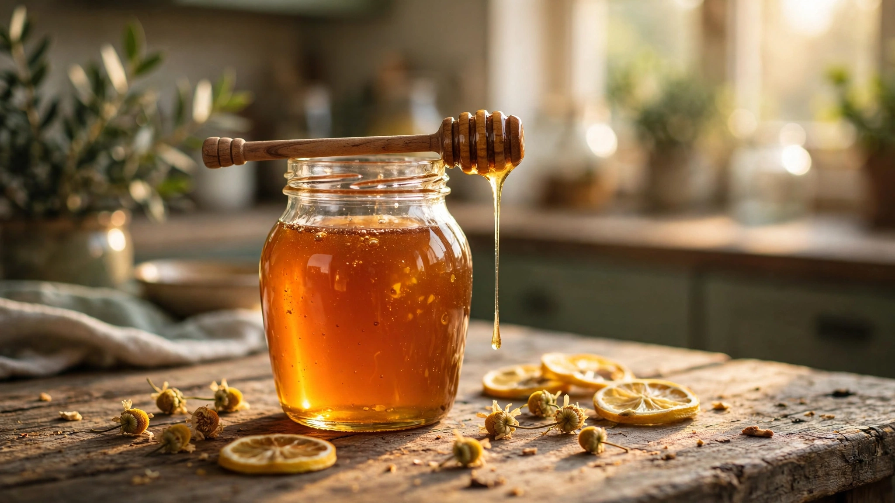
Doctors Dismiss Honey as Folk Medicine. An Oxford Meta-Analysis of 1,761 Patients Found It Relieves Coughs and Colds Better Than Standard Treatments.
A systematic review of 14 clinical trials at Oxford University found honey reduced cough frequency by 36% and cough severity by 44% compared with usual care, including over-the-counter medications and antibiotics.
Every Classroom Teaches the Lesson Before Assigning Problems. A Meta-Analysis of 53 Studies Found Students Learn More Deeply When They Struggle and Fail First.
A meta-analysis of 53 studies and 166 comparisons found that students who attempt challenging problems before receiving instruction develop significantly greater conceptual understanding and transfer ability than those taught the traditional way.
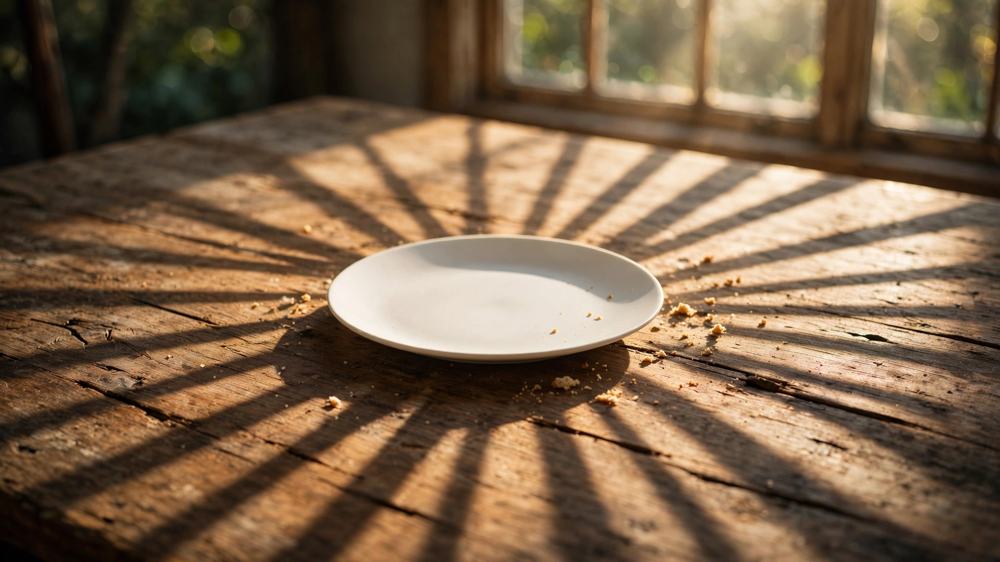
Millions Follow the 16:8 Rule: Eat for Eight Hours, Fast for Sixteen, Lose More Weight. A Year-Long NEJM Trial Found the Fasting Window Adds Nothing.
A randomized trial assigned 139 adults with obesity to calorie restriction with an eight-hour eating window or calorie restriction alone. After 12 months, the fasting group lost 8.0 kg and the non-fasting group lost 6.3 kg — a difference that was not statistically significant.
Every Parent Limits Screen Time to Protect Their Child's Eyes. A Randomized Trial of 1,903 Children Found That Adding 40 Minutes of Outdoor Time Cut Nearsightedness by 23%.
A cluster randomized trial added 40 minutes of outdoor activity per school day. Over three years, myopia incidence dropped from 39.5% to 30.4%. The mechanism: retinal dopamine release triggered by bright daylight that indoor lighting can't activate.
For 300 Years, Doctors Classified Nostalgia as a Potentially Fatal Disease. Seven Studies Found It Actually Strengthens Mental Health.
In 1688, a Swiss physician coined "nostalgia" as a neurological disease that could kill homesick soldiers. A seven-study investigation found it actually bolsters social bonds, elevates self-regard, and generates positive affect.
Speed Reading Apps Promise 1,000 Words per Minute. A Review of Decades of Eye-Tracking Research Found the Entire Premise Is Biologically Impossible.
A comprehensive review published in Psychological Science in the Public Interest synthesized decades of eye-movement research and concluded that there is no way to dramatically increase reading speed without proportional comprehension loss.
Everyone Told You to Watch Your Mouth. Six Experiments Found Swearing Increases Pain Tolerance — but Frequent Swearers Get Almost No Benefit.
A repeated-measures experiment at Keele University found that participants who repeated a self-selected swear word could endure ice water for an average of 31 seconds longer than when using a neutral word. Replicated across six studies including cross-cultural validation — but habitual swearers show a diminished response.
Your Doctor Worries About Your Weight. Not Your Friendships. A Meta-Analysis of 308,849 People Found Social Isolation Is Deadlier Than Obesity.
Across 148 prospective studies spanning an average of 7.5 years, people with stronger social relationships had 50% higher odds of survival than those with weaker ties.

The Most Famous Finding in Social Psychology Says Bystanders Won't Help. Surveillance Footage from Three Countries Found They Intervene 91% of the Time.
An analysis of 219 surveillance videos from Amsterdam, Cape Town, and Lancaster found that at least one bystander stepped in during 9 out of 10 public conflicts, with more bystanders increasing the likelihood of help.
Humans Are Overconfident About Almost Everything. Five Studies Found the One Exception: After Conversations, People Systematically Underestimate How Much Others Liked Them.
Five studies at Cornell, Harvard, Yale, and Essex tracked strangers, workshop attendees, and college suite mates. In every sample, participants believed they made a worse impression than they actually did, and the error lingered for nine months. Third-party observers could see the warmth that participants themselves missed.
BMI Guidelines Say Overweight Is a Health Risk. A JAMA Meta-Analysis of 2.88 Million People Found Those Classified as Overweight Were Less Likely to Die Than Those at 'Normal' Weight.
A systematic review of 97 prospective studies encompassing more than 2.88 million individuals and 270,000 deaths found that overweight adults (BMI 25–30) had 6% lower all-cause mortality than those at "normal" weight, while only severe obesity (BMI ≥ 35) carried significantly higher risk.
Everyone Believes Expensive Wine Tastes Better. In 6,175 Blind Tastings, the Correlation Between Price and Enjoyment Was Negative.
A landmark study tracked 506 adults tasting 523 different wines without knowing the prices. Non-experts rated expensive wines slightly lower, and a companion fMRI study showed why the price tag works: it activates the brain's pleasure center, making identical wine taste better when you think it cost more.
Police, Judges, and Federal Agents Are Trained to Spot Liars. A Meta-Analysis of 206 Studies Found They Perform No Better Than Untrained College Students.
A meta-analysis of 24,483 human judges across 206 experiments found that people detect lies at 54% accuracy, where 50% is chance. The breakdown is worse than it sounds: humans catch only 47% of lies while correctly identifying 61% of truths. Trained professionals show no meaningful advantage.
Parents Sanitize Everything to Protect Their Children. Amish Children Who Grow Up in Barn Dust Have One-Quarter the Asthma Rate of Their Genetically Similar Neighbors.
Two farming communities with shared ancestry and nearly identical lifestyles showed a fourfold gap in childhood asthma. The difference traced to barn dust: when researchers blew Amish house dust into mice, it prevented allergic asthma through innate immune signaling. Hutterite dust did nothing.
Artificial Sweeteners Were Assumed to Be Metabolically Inert. A Randomized Trial of 120 Adults Found Saccharin and Sucralose Impaired Blood Sugar by Disrupting the Gut Microbiome.
A randomized controlled trial gave 120 healthy adults daily sachets of saccharin, sucralose, aspartame, or stevia for two weeks at doses below the FDA safety limit. Saccharin and sucralose significantly impaired glycemic responses through microbiome-mediated changes confirmed by fecal transplant into germ-free mice.
Everyone Warns You That Spicy Food Will Ruin Your Stomach. A Meta-Analysis of 570,762 Adults Found Regular Chili Pepper Consumption Reduces Mortality Risk by 12%.
A systematic review pooled four large prospective cohort studies from China, the United States, Italy, and Iran. Regular chili pepper consumers had a 12% lower risk of all-cause death, a 17% lower risk of cardiovascular death, and the protective effect held regardless of diet quality.
Everyone Imagines Dying as Dreadful. An Analysis of 2,616 Blog Posts by Terminal Patients Found Their Words Grew More Positive as Death Approached.
Researchers compared blog posts of terminally ill patients and last words of death-row inmates with the imagined writings of healthy people. The dying used fewer negative-emotion words and more positive ones than the healthy predicted, and patients' positivity increased as death drew nearer.
One in Three Americans Sleeps Six Hours a Night and Feels Fine. A Controlled Experiment Found Their Brains Worked as Poorly as if They'd Been Awake for Two Days Straight.
A dose-response study at the University of Pennsylvania restricted 48 healthy adults to four, six, or eight hours of sleep per night for 14 consecutive days. The six-hour sleepers developed the same level of cognitive impairment as subjects who hadn't slept at all for 48 hours.
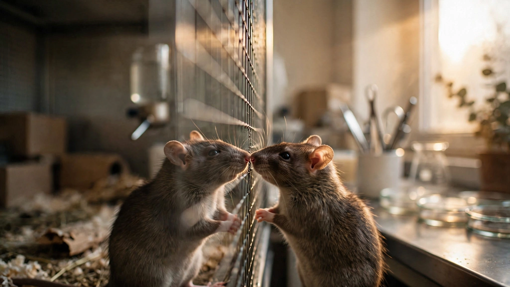
Addiction Hijacks the Brain So Nothing Else Matters. NIH Researchers Found That Even 'Addicted' Rats Chose a Friend Over Methamphetamine Every Time.
Across five experiments involving over 100 rats, NIH researchers gave animals a lever for drugs and a lever for social interaction with a peer. Every time, regardless of sex, drug class, dose, or DSM-IV-based addiction score, they chose the friend.
Therapists Tell You Never to Suppress Negative Thoughts. A Cambridge Study of 120 People Across 16 Countries Found Suppression Training Reduced Depression for Three Months.
A randomized trial trained 120 adults to suppress fearful thoughts over three days. No rebound effects occurred. Instead, suppression reduced anxiety, negative affect, and depression, with the largest benefits appearing in the most symptomatic participants.
Your Teacher Told You to Stop Fidgeting. A 12-Year Study of 12,778 Women Found Fidgeting Eliminated the Deadly Risk of Prolonged Sitting.
Among low fidgeters, sitting seven-plus hours a day raised mortality risk by 30%. Among high fidgeters, the same amount of sitting carried no increased risk at all. Controlled lab experiments confirmed the mechanism: rhythmic leg movements during sitting maintain arterial blood flow and preserve endothelial function.
Your Mother Told You Cold Would Make You Sick. A Randomized Trial of 3,018 Adults Found Cold Showers Cut Sick Days by 29%.
The largest randomized controlled trial of cold showering assigned 3,018 Dutch adults to finish their daily showers with 30, 60, or 90 seconds of cold water for 30 days. All three groups showed the same result: a 29% reduction in sick days from work. The duration didn't matter. And 91% chose to keep going.
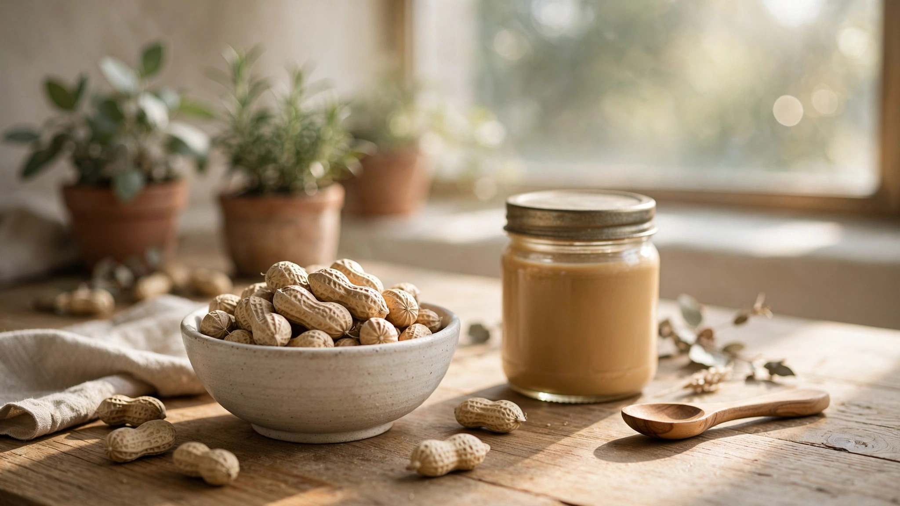
Pediatricians Told Parents to Keep Peanuts Away from Babies Until Age Three. A Trial of 640 Infants Found That Feeding Them Peanuts Early Cut Allergy by 81%.
The LEAP trial randomly assigned 640 high-risk infants to consume or avoid peanuts from infancy to age 5. Peanut allergy developed in 13.7% of avoiders but only 1.9% of consumers. Follow-up to age 12 confirmed the protection lasted, forcing a complete reversal of the guidelines that had been wrong for 15 years.
Every Instinct Says to Fight Cancer with Surgery. A 15-Year Trial of 1,643 Men Found That Monitoring Prostate Cancer Achieves the Same Survival Rate.
The ProtecT trial randomly assigned 1,643 men with localized prostate cancer to active monitoring, surgery, or radiotherapy and tracked them for 15 years, finding no significant difference in cancer-specific survival between doing nothing and doing everything.
Every University Adds Trigger Warnings to Protect Students. A Meta-Analysis of 7,000 Participants Found They Increase Anxiety Without Reducing Distress.
A preregistered meta-analysis of all experimental research on trigger warnings found zero effect on emotional reactions (d = 0.02), zero effect on avoidance, and zero effect on comprehension. Their single reliable effect: a small-to-medium increase in anticipatory anxiety.
Everyone on Your Train Is Avoiding Everyone Else. Nine Experiments Found They'd All Be Happier If They Talked.
Nine field experiments randomly assigned over 800 Chicago commuters to connect with a stranger, sit in solitude, or commute normally. Those who talked reported the most positive experience. Every commuter predicted the opposite.
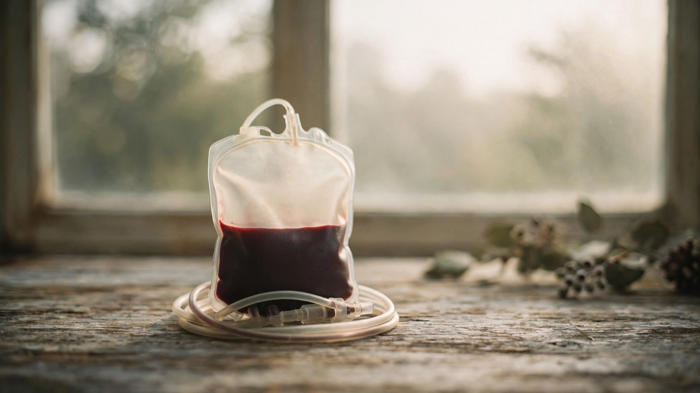
Paying Blood Donors $7 Should Have Increased Supply. In a Swedish Field Experiment, It Cut Female Donations Nearly in Half.
A randomized field experiment offered potential blood donors SEK 50 (~$7). Among women, willingness to donate dropped from 52% to 30%. Allowing them to redirect the payment to charity restored the rate to 53%.
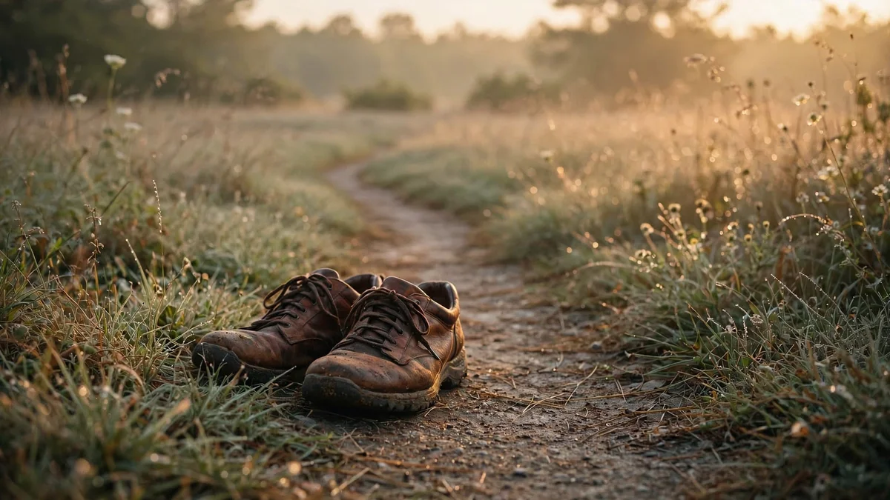
Everyone Chases 10,000 Steps a Day. That Number Was a 1965 Marketing Slogan. A Meta-Analysis of 226,889 People Found You Need Fewer Than 4,000.
A meta-analysis of 17 cohort studies found that mortality benefits from walking begin at roughly 4,000 steps per day, with each additional 1,000 steps reducing all-cause mortality by 15%. The famous 10,000-step target originated as a Japanese pedometer brand name, not a scientific recommendation.
Every Parent Worries About Screen Time. A Study of 355,358 Adolescents Found It Explains Less of Their Well-Being Than Wearing Glasses or Eating Potatoes.
Using a novel statistical method that tested every plausible analytic path through three massive datasets, Oxford researchers found that digital technology use accounts for at most 0.4% of the variation in adolescent well-being, an effect so small that potatoes and corrective lenses have comparable or larger negative associations.
80% of Americans Believe Music Lessons Make Kids Smarter. A Meta-Analysis of 54 Studies and 6,984 Children Found the Effect Is Zero.
The belief that learning piano or violin boosts children's IQ, reading, and math skills has driven school policy and parenting decisions for three decades. A comprehensive meta-analysis found that when studies use proper controls, music training produces no cognitive or academic benefit whatsoever.
Your Willpower Doesn't Run Out. Two Preregistered Studies With 5,672 Participants Across 59 Labs Found the 'Ego Depletion' Effect Is Essentially Zero.
The idea that self-control is a finite resource, backed by 600+ published studies and taught in every psychology textbook, collapsed when 59 laboratories ran coordinated replications. The observed effect was an order of magnitude smaller than the original meta-analytic estimate.
Hospitals Spend Billions Making Patients Happy. A Study of 51,946 Adults Found the Most Satisfied Patients Were 26% More Likely to Die.
A nationally representative study found that patients rating their healthcare highest had greater hospital admissions, 9% higher drug expenditures, and 26% increased mortality risk. A 2019 replication with nearly 93,000 participants found an even stronger effect.
Everyone Wants the Most Experienced Doctor. A Study of 736,537 Hospitalizations Found Patients of Older Physicians Had Higher Mortality.
A national analysis of Medicare hospital admissions found that 30-day mortality rose steadily with physician age, from 10.8% for doctors under 40 to 12.1% for those over 60. The effect disappeared for high-volume physicians.
Your Doctor Told You Running Would Ruin Your Knees. A Meta-Analysis of 125,810 People Found Runners Get Less Arthritis Than Couch Potatoes.
A systematic review of 25 studies across six countries found that recreational runners develop knee and hip osteoarthritis at barely one-third the rate of sedentary people. Competitive athletes do face higher risk. But for the tens of millions who jog a few times a week, the couch appears to be the bigger threat to their joints.
52 Million Americans Take Acetaminophen Every Week. Two Double-Blind Trials Found It Also Reduces Their Empathy.
Acetaminophen is the most widely used drug ingredient in the United States. A pair of randomized controlled trials at Ohio State found it doesn't just numb your own pain. It numbs your response to everyone else's.
Talking Through Trauma Right After It Happens Seems Obviously Helpful. A Cochrane Review of 15 Trials Found It Can Make PTSD Worse.
For two decades, organizations mandated that survivors of disasters, accidents, and violence sit down with a counselor within hours and relive what happened. Fifteen randomized trials found no benefit. Two found it caused harm.
Patients Who Knew They Were Taking Sugar Pills Still Got Better. A Meta-Analysis of 60 Trials Exposed the Paradox.
Sixty randomized controlled trials. 4,554 participants. Patients told the pills were sugar pills. They improved anyway — especially the sickest ones.

Medicare Penalized Hospitals for Readmitting Patients. A Study of 8 Million Cases Found It Increased Deaths.
The Hospital Readmissions Reduction Program fined hospitals nearly $2 billion for readmitting patients within 30 days. A JAMA study of 8.3 million Medicare hospitalizations found the policy was associated with roughly 10,000 excess deaths from heart failure and pneumonia.

Athletes Swear by Ice Baths for Recovery. A 12-Week Trial Found They Cut Muscle Growth by Two-Thirds.
A randomized controlled trial of 21 strength-trained men found that 10 minutes of cold water immersion after every workout reduced muscle mass gains by 67%. A 2021 meta-analysis of eight studies confirmed the damage.

NBA Playoff Series Go to Seven Games Less Often Than Math Predicts. The Rigging Theory Gets the Numbers Backward.
An original analysis of 345 best-of-7 series finds Game 7s occur 15% less often than probability models predict. The conspiracy theory relies on a decade-old mathematical error.

Rage Rooms Charge $50 to Smash Things. A Meta-Analysis of 154 Studies Found Venting Anger Makes It Worse.
A 2024 meta-analysis of 10,189 participants found that venting anger has an effect size of essentially zero. Deep breathing and meditation cut anger by a medium-large margin.